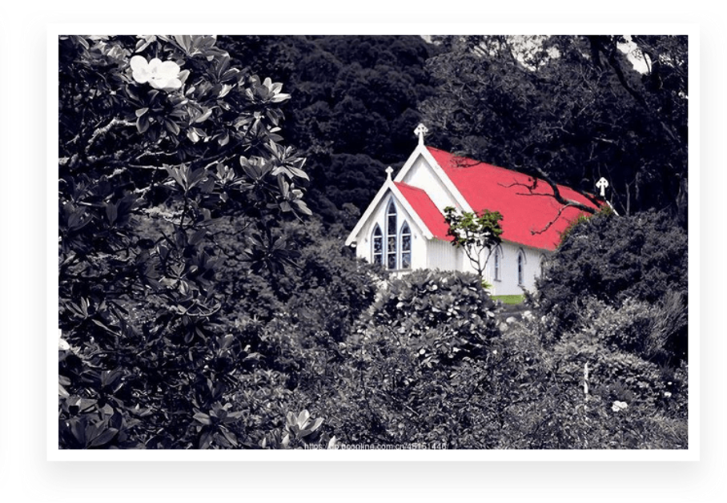

移动鼠标，寻找色板上的“七个大陆”

平衡
块


冷暖平衡
红黄橙色系给人的感觉比较温暖，所以我们将红黄橙色系归为暖色系，而绿青蓝给人的感觉是比较寒冷，所以我们将滤清蓝色系归为冷色系。 在色彩搭配的时候如果大面积使用暖色，就应该适当的搭配一些冷色，降低画面的燥热感，达到冷暖平衡。
深浅平衡
画面中的颜色应该有深有浅，互相搭配，比如我们的主色调是浅色系，就可以用深色系的色调来搭配，这样可以满足深浅平衡。
色彩面积平衡

彩色与黑白
有彩色就是我们在色轮上能找到的五颜六色的各种颜色，而无彩色说白了就是黑白灰，无彩色的黑白灰给人的感觉往往比较无聊，而彩色给人的感觉是非常的活跃不够沉稳，二者搭配会平衡各自的缺点，发扬各自的优点。